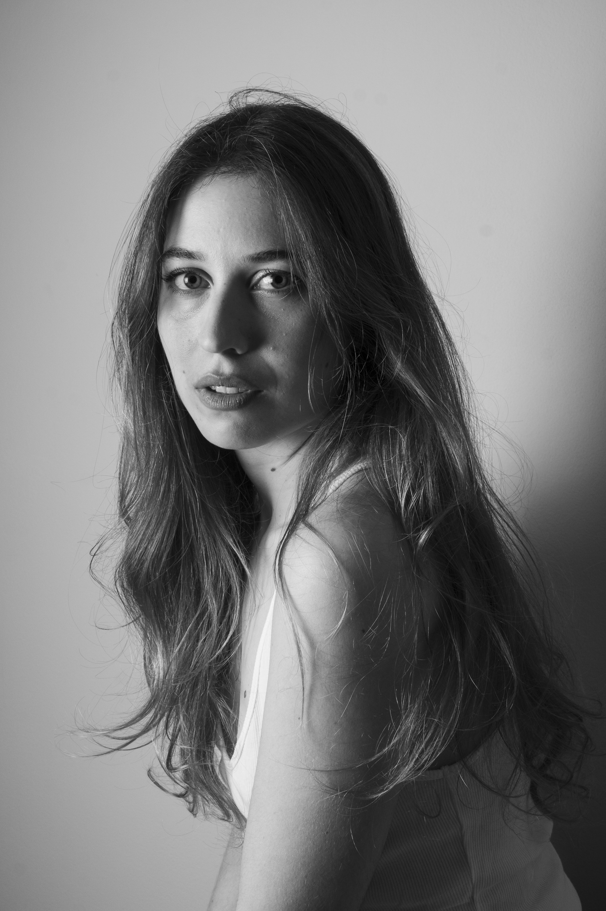
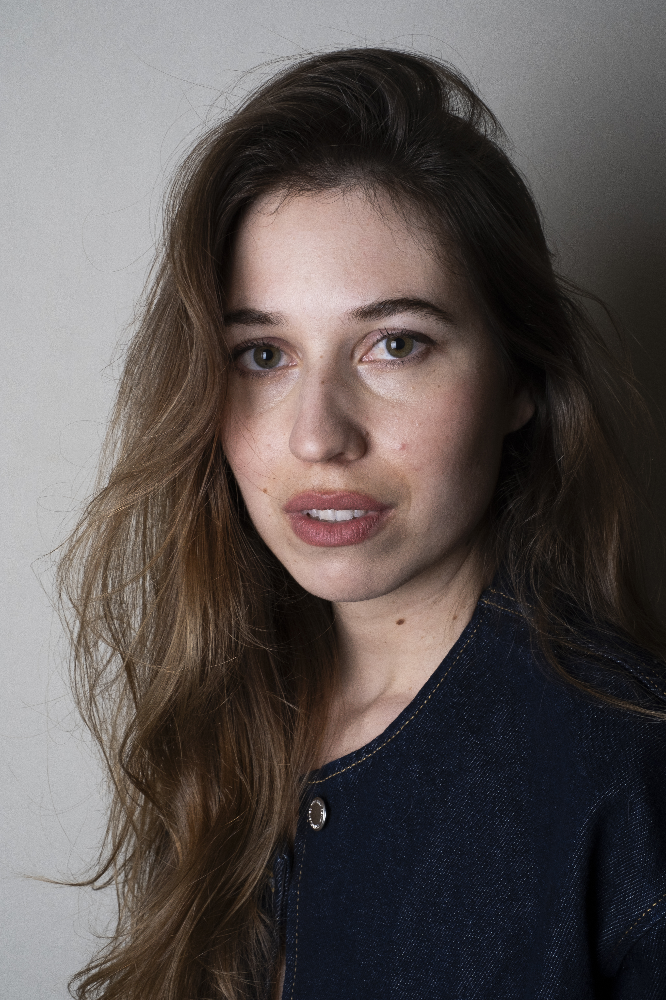

PORTRAIT Nº 01ACTRESS
& STORYTELLER
& STORYTELLER
01 — BIOGRAFÍA
Una mirada propia.
Muchas vidas.
Silvia Aguaded (Sevilla, 1994) es actriz, formada en artes escénicas en Madrid y Nueva York. Su trabajo transita entre el cine, la televisión y el teatro, con un interés especial por los personajes complejos y las historias que exploran la condición humana.
En 2022 debuta en el Corral de Comedias de Alcalá de Henares como actriz, directora y dramaturga con La silla vacía. En 2025 interpreta a Yerma en un montaje dirigido por Richard Sahagún y cofundó Estudio Andalucía.
Hablemos ↗
02 — SILVIA AGUADEDSEVILLE, SPAIN
02 — CINE Y TELEVISIÓN
En pantalla
Una selección de trabajos audiovisuales.
Del olor de las nubes — Luna
El Puente — Movistar+
Centro Médico — TVE
Spanish Love
Filmografía en actualización. Próximamente, trailers y videobook.
03 — TEATRO
El cuerpo
también narra.
El escenario como lugar de búsqueda, encuentro y transformación.
Yerma
Dir. Richard Sahagún · Estudio Andalucía
La silla vacía
Corral de Comedias de Alcalá de Henares
La ronda
Dir. Jaime Chávarri
El sueño de una noche de verano
Dir. Darío Facal · Work in Progress
04 — GALERÍA
En imágenes
Retratos. Personajes. Instantes.
05 — FORMACIÓN Y HABILIDADES
Formación
Work in Progress · Madrid
Susan Batson Studio · New York
The Wooster Group · New York
The Public Theater · Shakespeare in the Park
Idiomas
Español · Nativo
Inglés · Fluido
Francés · Fluido
Italiano · Intermedio
Otras habilidades
Danza · Flamenco · Jazz · Hip hop
Nociones de canto
Créditos, idiomas y formación pendientes de cotejo con el CV actualizado de representación.